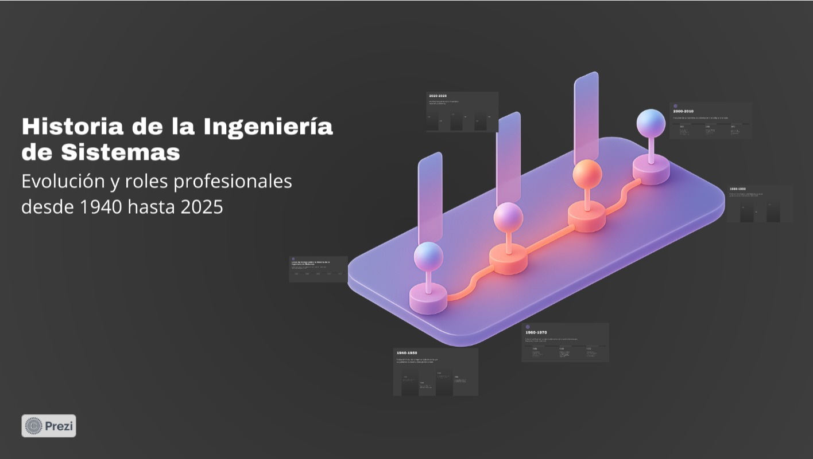

Actividad 1
Línea de tiempo: evolución de la ingeniería de sistemas
Investigamos la evolución de la ingeniería de sistemas y sus principales roles profesionales. El resultado fue una línea de tiempo que organiza los hitos, cambios tecnológicos y transformaciones del campo.
Ver documento PDF